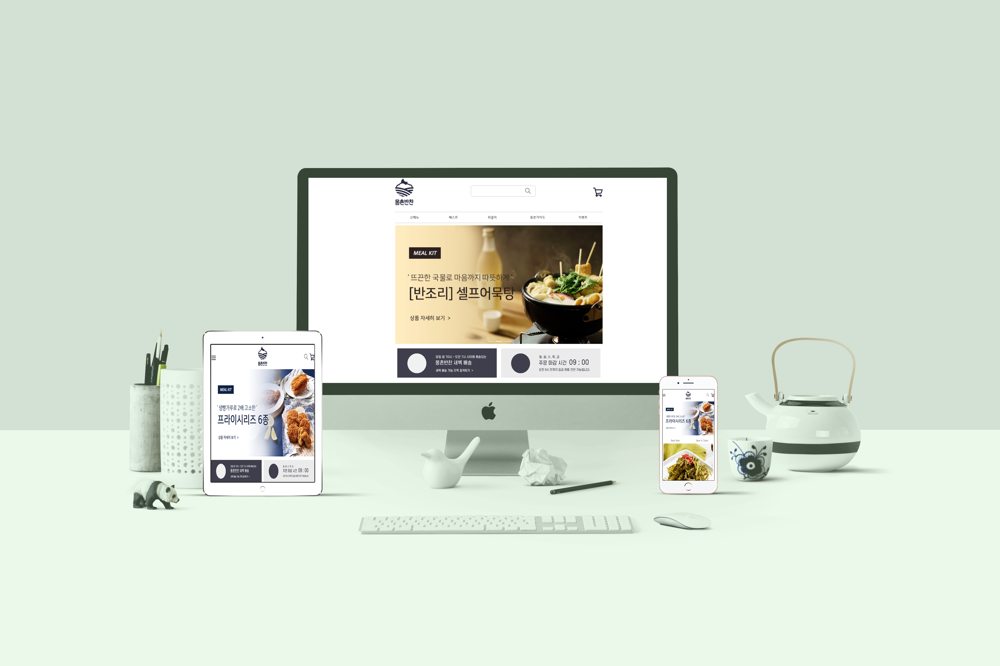

Gateman
GATEMAN
PC
게이트맨 홈페이지 리뉴얼
심플하고 간결한 디자인과 도어락 상품에 집중된 페이지
홈페이지로 이동
* 포트폴리오는 개인적인 작업물로, 해당기업과는 아무 관련이 없습니다.
롯데리아
롯데리아
bootstrap
롯데리아 홈페이지 리뉴얼
bootstrap을이용한 간단한 롯데리아 홈페이지 리뉴얼
홈페이지로 이동
* 포트폴리오는 개인적인 작업물로, 해당기업과는 아무 관련이 없습니다.
몽촌반찬

몽촌반찬
RESPONSIVE
몽촌반찬 반응형 리뉴얼
반찬들의 정직한 이미지를 살리고,
건강하고 친환경적인 느낌을 살린 반응형 페이지
홈페이지로 이동
* 포트폴리오는 개인적인 작업물로, 해당기업과는 아무 관련이 없습니다.
SSSAK
SSSAK
MOBILE
SSSAK 홈페이지 리뉴얼
기존의 SSSAK 홈페이지를 간단하게 리뉴얼한 모바일페이지
홈페이지로 이동
* 포트폴리오는 개인적인 작업물로, 해당기업과는 아무 관련이 없습니다.
국립중앙박물관
국립중앙박물관
PC
중앙박물관 홈페이지 리뉴얼
박물관의 전시물들과,
박물관 위치를 알 수 있는 반응형포트폴리오
홈페이지로 이동
* 포트폴리오는 개인적인 작업물로, 해당기업과는 아무 관련이 없습니다.